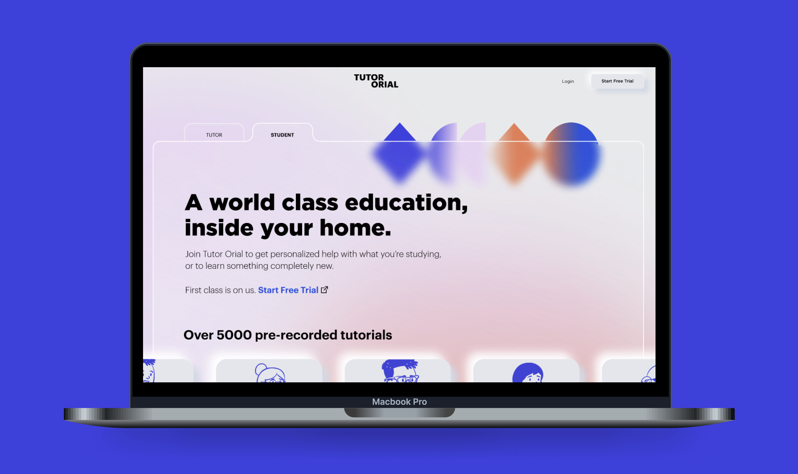
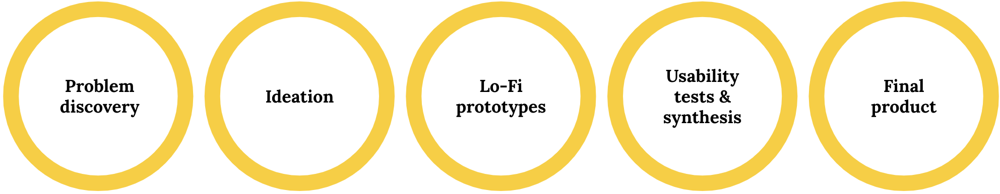

Year
2021Length
8 wksTitle
Tutor OrialMedium
Mobile AppDetails
Tutor Orial is a fictitious website I worked on as coursework for my Master's in Digital Product Design.

The Problem
Tutor Orial is a new tutor agency for high school and college aged students. They launched their website about a year ago, and found they have very low registration rates. There have been many complaints and bad social media reviews about how complicated the sign-up process is, which is causing the business to struggle and tutors to leave since they are not seeing enough clients.
I was tasked to understand Tutor Orial’s clients needs and ultimately enhance their sign-up process with a fresh flow (UX) and new face (UI). As a member of Tutor Orial’s target demographic as well as a former tutor, I understand the importance of a proper tutor-tutee pairing. I am particularly motivated to pursue this redesign to help future students mitigate the sometimes stressful and intimidating process (that I have been through many, many times) of finding educational help.
I was tasked to understand Tutor Orial’s clients needs and ultimately enhance their sign-up process with a fresh flow (UX) and new face (UI). As a member of Tutor Orial’s target demographic as well as a former tutor, I understand the importance of a proper tutor-tutee pairing. I am particularly motivated to pursue this redesign to help future students mitigate the sometimes stressful and intimidating process (that I have been through many, many times) of finding educational help.
The Process

↑ The five key design phases I worked through over the course of eight weeks.
With only eight weeks to complete this project, I had to move quickly through five key design phases.
↑ Heuristic evaluation of Tutor Orial's existing sign-up flow.
My process began with a heuristic evaluation to understand the specific pain points of Tutor Orial’s current sign-up flow. Spoiler: There were many. Due to time constraints, I further categorized my heuristic findings by severity level1so that the most impactful issues were addressed first. I then extracted the themes of the most urgent issues to guide secondary research on how other people in the industry were solving these problems. The sum of my heuristic evaluation and secondary research informed my hypothesis that:
De-emphasizing the sign-up process by reducing the number of steps in the booking process will increase the number of sales and accounts created onTutor Orial.
This hypothesis soon proved to be very wrong.
But first, I used that hypothesis to prototype a sign-up flow that promoted bookings,2 that was quick (one-step) and highly visual—the antithesis of Tutor Orial’s existing flow. Four rounds of user interviews, a pass/fail feature table, and an affinity map revealed to me that a shorter sign-up process actually increased confusion as it did not coincide with users’ mental models for the length of a typical sign-up process.
1Heuristic ratings are assigned based on the number of violations; “catastrophic” heuristics are not necessarily the most severe and/or impactful to the user flow
2 As opposed to account creation
↑ The five key design phases I worked through over the course of eight weeks.
With only eight weeks to complete this project, I had to move quickly through five key design phases.
↑ Heuristic evaluation of Tutor Orial's existing sign-up flow.
My process began with a heuristic evaluation to understand the specific pain points of Tutor Orial’s current sign-up flow. Spoiler: There were many. Due to time constraints, I further categorized my heuristic findings by severity level1so that the most impactful issues were addressed first. I then extracted the themes of the most urgent issues to guide secondary research on how other people in the industry were solving these problems. The sum of my heuristic evaluation and secondary research informed my hypothesis that:
De-emphasizing the sign-up process by reducing the number of steps in the booking process will increase the number of sales and accounts created onTutor Orial.
This hypothesis soon proved to be very wrong.
But first, I used that hypothesis to prototype a sign-up flow that promoted bookings,2 that was quick (one-step) and highly visual—the antithesis of Tutor Orial’s existing flow. Four rounds of user interviews, a pass/fail feature table, and an affinity map revealed to me that a shorter sign-up process actually increased confusion as it did not coincide with users’ mental models for the length of a typical sign-up process.
1Heuristic ratings are assigned based on the number of violations; “catastrophic” heuristics are not necessarily the most severe and/or impactful to the user flow
2 As opposed to account creation
The Solution
I used the insights generated in my round of research to formulate three how might we (HMW) questions, which ultimately guided the development of my lo-fi and mid-fi prototypes: